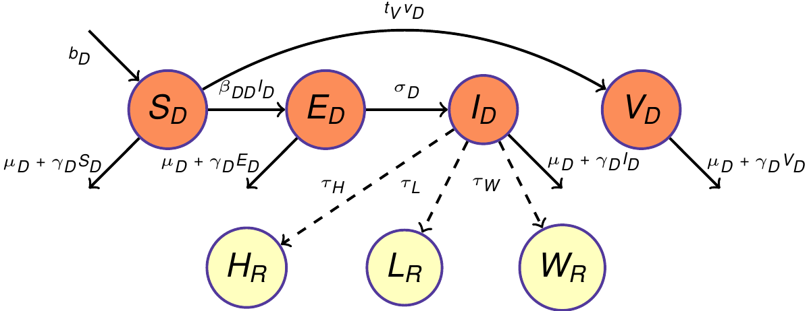

Rabies
Table of Contents
1 Introduction
1.1 Rabies papers from CIDMA and PHFI
| Potential for Rabies control through dog vaccination in wildlife-abundant communities of Tanzania | Fitzpatrick et al. 2012 | PLoS Negl. Trop. Dis. |
| Cost-effectiveness of canine vaccination to prevent human rabies in rural Tanzania | Fitzpatrick et al. 2014 | Ann. Intern. Med. |
| Rabies control initiative in Tamil Nadu, India: a test case for 'One Health' approach | Abbas et al. 2011 | Intl. Health |
| Moving from rabies research to rabies control:lessons from India | Kakkar et al. 2012 | PLoS Negl. Trop. Dis. |
| Research & policy disconnect: The case of rabies research in India | Abbas and Kakkar 2013 | Indian J. Med. res. |
| Cost analysis of a population level rabies control programme in Tamil Nadu, India | Abbas et al. 2014 | PLoS Negl. Trop. Dis. |
2 Model
2.1 Model Diagram

2.2 Model Equations
Parameters used in model fitting:
| Parameters | Definitions | Values | Derivation | Ref |
|---|---|---|---|---|
| bD | Dog's birthrate | 0.0015 | .475 pregnancies*5 pups per litter(median)*366969 female dogs/1547238 dogs*(1/365 days) | Totton 2010 |
| μD | Dog's frequency dependent death rate | bD/1.1 | 1/lifespan of 1.9 years at birth/365–boosted a bit based on non-normal distribution | Reece 2008 |
| βDD | Dog to Dog transmission rate | - | We are fitting this now in form of R0 | |
| γD | Dog's density dependent death rate | \((b_D-mu_D)/K\) | - | |
| σD | Incubation rate in dogs | 0.045 | 1/incubation period | Hampson 2009 |
| αD | Rabies induced death rate in dogs | 0.32 | - | Hampson 2009 |
| vD | Vaccination rate in dogs | 0 | This value will change | |
| K | Carrying capacity | 1,600,000 | An estimation from the current number of dogs | Livestock census 2012 |
| N0 | Dog's population of Tamil Nadu | 1,547,238 | Tamil Nadu 2012 dog population: 1,547,238, area: 130,058 km2 over 10,000 m2 | Livestock census 2012 |
| br | Bite rates of rabid dogs to humans | Fitting | ||
| PEP | PEP coverage for humans | 0.9 | This value will change |
3 Delhi Meeting
3.1 Present and Explain model to Abbas and Hiral
- Assumptions and Outputs
We are using Meagan's rabies transmission model without wildlife in it. We have modeled dog vaccination as well as ABC in the model.
- Livestock related data (OIE data). Is it ok to use ?
We learned from NIVEDI that the spike in the Kerala data is due to improved surveillance. Not sure, if we trust this
- Discussion about Wildlife related data
- No evidence of their being reservoir.
- Any sense of what are the benefits here ?
We decided that we will not include wildlife as part of transmission cycle. Also, we do not have relevant information to relate the rabid dogs to rabies in wildlife (probability tree) so we will not use wildlife as dead-end host for main analysis. But we will do additional what if analysis with wildlife as dead end host.
- Model Fitting
Currently we are fitting the model to the human incidence by fixing \(R_0\) to \(1.1\).
3.2 Metric
- What are the sectors of interest ?
- What are measurable quantities for each sector ?
- Who pays for the program ?
Note: We discussed these questions at the meeting. Abbas and Hiral are working on these currently. The third question might not be the immediate question of interest because we will mainly be emphasizing on the framework rather than the result.
3.3 Interventions
- What are the interventions of interest ?
- Human PEP + ARV
- Human PEP + ABC
- Human PEP + ABC + ARV
- Human PEP + Culling
- Human PEP + ARV + Culling
- Washing wound with water+soap
- Awareness/Equation
- Solid waste management
- Livestock PEP
Note: These are some of the interventions we discussed. We will only use top 3 or 5 for now.
3.4 Go over cost data with Abbas and Hiral
- Human related costs
- Cost of vaccination
- Other associated costs Some of these costs are in Abbas's cost analysis paper and they have provided the associated data.
- Livestock related costs
- Hiral and Abbas provided us some data and working to acquire more data.
- Wildlife related costs
- We absolutely have nothing about wildlife related cost for now and our analysis will be not part of main result and so we will do it with assumed values.
3.5 Vaccine Efficacy
- Humans:
- Does everyone get it ?
- Is it perfect ?
- What is the coverage due to delay and other reasons ?
- Dogs:
- Is it perfect ?
3.6 Day 1
- PHFI vision:
- Modeling and intervention efficacy
- Cost Analysis
- Cost effectiveness analysis
- MCDA Looking at different perspective and finding the benefit. Feasibility of the intervention.
3.7 Day 2
Papers
- Stray dog population demographics in Jodhpur, India following
population control/rabies vaccination program (Sarah C. Totton)
- Extracting efficacy of ABC program
- Urban setting
- Dog population pre an post ABC
- Control of rabies in Jaipur, India by the sterlization and
vaccination of neghbourhood - Reece
- ABC-AR dog census
- Human Rabies
- Canine Rabies
- Disease control through fertility control: Secondary benefits of
animal birth control in Indian street dogs- Yoak
- Make it one the canine effectiveness outcome/measure
- Secondary benefits (?)
- Read the papers and references
- Copy of ABC report by financial year from NJ
- Follow-up grant and potential partners
- Jaipur data from 2004–>
- Before 2004, Reece data from Jaipur
- Mainly females till 2000 and then some males
- Strelization in males quicker (2012)
- Rabies data Human:Dog ratio in Jaipur, Jodhpur and Jaiselmer
- Demography data in Old Jaipur/Pink city (underestimate)
- Percentage of female dogs sterlized
- Guidelines say PCR is gold standard, or FAT results.
- ABC-AR in Haryana (Public data)
- Demographic surveys in Haryana Unowned street dogs, Owned street dogs. Humanesociety.org did this all over the world
- Think about using Fig 9 from Haryana data to use for urban and rural dog to human density.
- Tamil Nadu Veterinary and Animal Sciences University
In chennai, Animal Rabies cases between 01.01.2014-01.01,2015
Brain samples (most prob), Under-reporting. (Chennai).
- Nadres Reports
- Endemicity Map for whole countries. Highly under-estimation (2007-2011). Productivity > Death. Herd disease is more important.
- What does outbreak mean ?
- How many cases ?
- How they report/under/over-report ?
- OIE data
- Incidence of Livestock diseases in India
- Abbas's paper Rabies control in Tamil Nadu
- B.B.Singh and A.A. Gajadhar,
- Nadres Reports
4 Notes
- Bite data and probability of rabies after bites
- A: From Shim et al. 2009
Probability description Probability (binomial CIs) Probability of developing rabies following a bite to the head by a rabid animal 0.55 (0.28-0.79) Probability of developing rabies following a bite to an upper extremity by a rabid animal 0.22 (0.12-0.38) Probability of developing rabies following a bite to the trunk by a rabid animal 0.09 (0.005-0.38) Probability of developing rabies following a bite to a lower extremity by a rabid animal 0.12 (0.06-0.23) - B: APCRI Journal Volume X, Issue II, January 2009 Page 19
Site Number Percentage (%) Upper limb 168 36.1 Lower limb 245 52.7 Trunk 14 3.0 Head and Neck 27 5.7 Multiple site 11 2.5 Total 465 100 - C: APCRI Journal Volume X, Issue II, January 2009 Page 27
Site Number Percentage (%) Head and Neck 9 2.81 Chest and Abdomen 12 3.75 Upper limb 30 9.37 Lower limb 238 74.37 Other 31 9.68 Total 320 100 - D: APCRI Journal Volume XVI, Issue II, January 2015 Page 22
Site Number Percentage (%) Upper limbs 1223 31.5 Lower limbs 2496 64.3 Chest and Abdomen 94 2.4 Head and Neck 23 0.6 Multiple Sites 46 1.2 Total 3882 100.0
- A: From Shim et al. 2009
- We can use the above wound specific data, and probabilities to
calculate probability of developing rabies, given a bite by a
rabid animal without prompt delivery of PEP. Note: The bite data is
not necessarily from rabid dogs. Will have to think about
them
I classified the Indian data to correspond to the values from A as follows:From A in B, C or D Head/Neck Head and Neck/Multiple site Upper extremity Upper limb Trunk Trunk/Other/Chest and Abdomen Lower extremity Lower limb So, we have
wound site Prob. from B Prob. from C Prob. from D Head/Neck 0.0817 0.0281 0.0178 Upper extremity 0.3613 0.0938 0.3150 Trunk 0.0301 0.1344 0.0242 Lower extremity 0.5269 0.7438 0.6430 Prob. of developing rabies without PEP 0.1904 0.1374 0.1584 Note that the data from B has more sample and close to the probability in Tanzania
- There are 2500 dispensaries in the state of Tamil Nadu and it gets only about 50 ARV vaccines per year. This probably runs out in a week. People who can afford can get it from private pharmacies.
5 Things to do
5.1 DONE Provide Exposure Humans (Low, Medium, High).
5.2 TODO Provide results divided as urban and rural settings.
5.3 DONE Remove livestock columns
5.4 TODO Predictions with ABC
6 Stakeholder's Meeting
| Parameters | Definitions | Values | Derivation | Ref |
|---|---|---|---|---|
| bD | Dog's birthrate | 0.0015 | .475 pregnancies*5 pups per litter(median)*366969 female dogs/1547238 dogs*(1/365 days) | Totton 2010 |
| μD | Dog's frequency dependent death rate | bD/1.1 | 1/lifespan of 1.9 years at birth/365–boosted a bit based on non-normal distribution | Reece 2008 |
| βDD | Dog to Dog transmission rate | - | We are fitting this now in form of R0 | |
| γD | Dog's density dependent death rate | \((b_D-mu_D)/K\) | - | |
| σD | Incubation rate in dogs | 0.045 | 1/incubation period | Hampson 2009 |
| αD | Rabies induced death rate in dogs | 0.32 | - | Hampson 2009 |
| vD | Vaccination rate in dogs | 0 | This value will change | |
| K | Carrying capacity | 1,600,000 | An estimation from the current number of dogs | Livestock census 2012 |
| N0 | Dog's population of Tamil Nadu | 1,547,238 | Tamil Nadu 2012 dog population: 1,547,238, area: 130,058 km2 over 10,000 m2 | Livestock census 2012 |
| br | Bite rates of rabid dogs to humans | Fitting | ||
| PEP | PEP coverage for humans | 0.9 | This value will change | |
7 My slides
- After developing the model, we needed to parametrize and validate it with data from India. For this, we used various resources from literature. For example, for dog's demography data, we used Livestock census done in 2012 to get an estimate of Stray and Owned dogs in Tamil Nadu as well as their breakdown to female and male dogs. Owned dogs were about 8.9 lakhs in Tamil Nadu as opposed to 6.4 lakhs stray dogs.
- We used data from a study by Sarah Totton published in Preventive Vetinery medicine in conjunction with Livestock census data to estimate the Dogs birth rate and used estimates of incubation period in dogs as well as Rabies induced mortality rate in dogs from an another study by Hampson that was published PLos Biology. We calibrated our model to estimated Rabies deaths data in humans for Tamil Nadu in year 2002 and for the model calibration, we assumed that the canine vaccination coverage was about 25% and PEP coverage in Human was 60%.
- For the model fitting to human rabies deaths, the connection was made through the rabid dog bites. i.e., human death happens when no PEP was given upon bite from a Rabid dog. The top figure is the distribution of Rabies deaths in humans that our transmission model was fitted to and as a result of model fitting, we found that the canine rabies reproductive number in India was between 1.1-1.24. And by reproductive number here, we mean the average number of dogs a rabid dog infects during its infectious period in an otherwise fully susceptible dog population. It also, means that to control Rabies transmission in dogs this number needs to be pushed below 1.
- After the model validation through fitting, we obtained model predictions under various control interventions. But to run the control interventions like ARV or ARV along with the sterlization, we had to make some assumptions. For example, for ARV, we assumed that dog owners who currently pay to vaccinate their dogs would start to use subsidized clinics once the intervention starts. And for the sterlization strategy, we assumed that about 50% of current dog owners would be willing to discontinue dog ownership in the future. Also, that as more and more dogs are captured and sterilized, capturing unsterilized dogs would become more difficult resulting in reduction in efficiency of dog catchers. For this, we used a functional form like this, which ensures that when only 10% of unsterilized fertile female dogs are left, the efficiency of catching dogs declines steeply.
- Next, Meagan will talk about some of our model predictions.
Note: Vaccination coverage 25%, Human PEP 60%. Last slide. About R0.
8 Delhi Meeting
- 1st paper (Modeling papers)
- Introduce and add the idea of female only ABC-ARV.
- Results based on human health and money.
- Cost analysis and effectiveness of human analysis.
- 2nd paper
- Framework
- One Health
- Economic analysis of Animal,Human and Canine population.
- Next Steps
Analysis Report Proposal CEA (Paper 1) IP (Paper 2) Policy (Paper 3) ? Dec 15, 2015 Nov 4, 2015 March, 2016 Minor re-fitting scale up-down (Incremental capacity) Dog ownership question Influx-outflow ? Bite rate data ? Urban/Rural Urban & Rural together Urban/Rural Adding re-vaccination
9 Paper
- Decline in Dog population under different strate